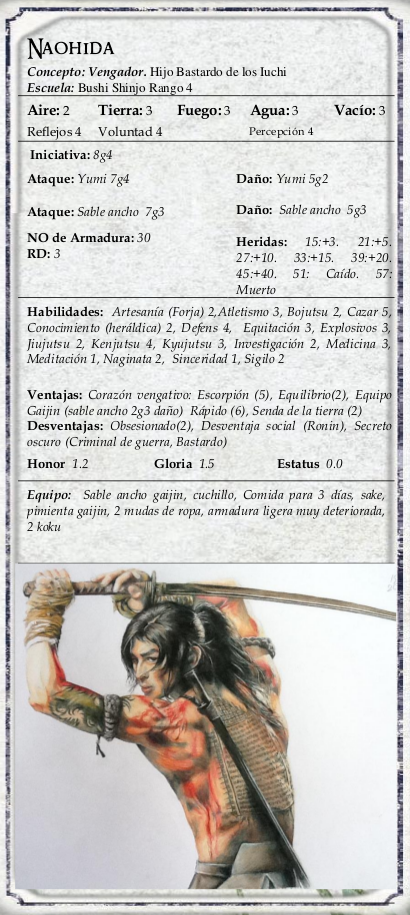

|  | Naohida, el hijo ilegítimo de Iuchi Kurosho y hermano secreto de Daiyu. Naohida creció en un ambiente campesino, se puso del lado de su padre en la guerra, formando a otros campesinos locales en una banda de guerrilleros, y actualmente fabricando explosivos desde el interior de una sucia cueva repleta de palomas. |